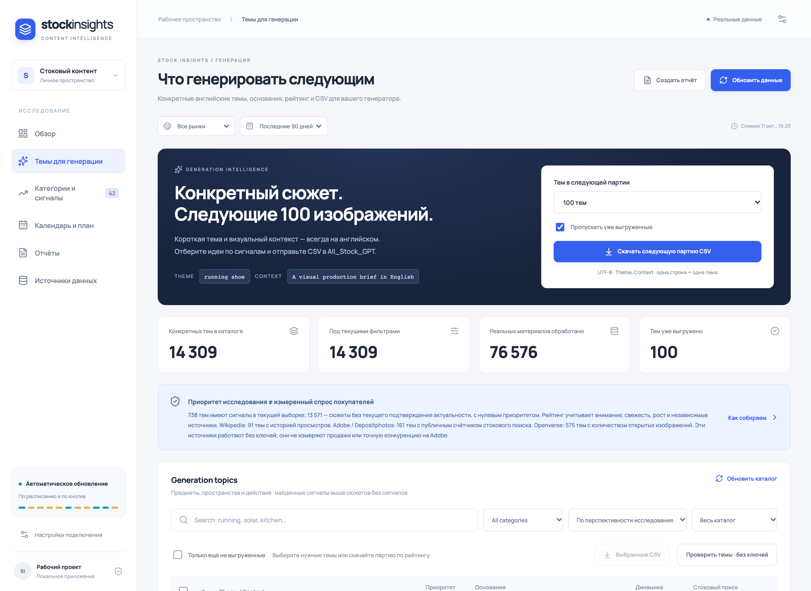
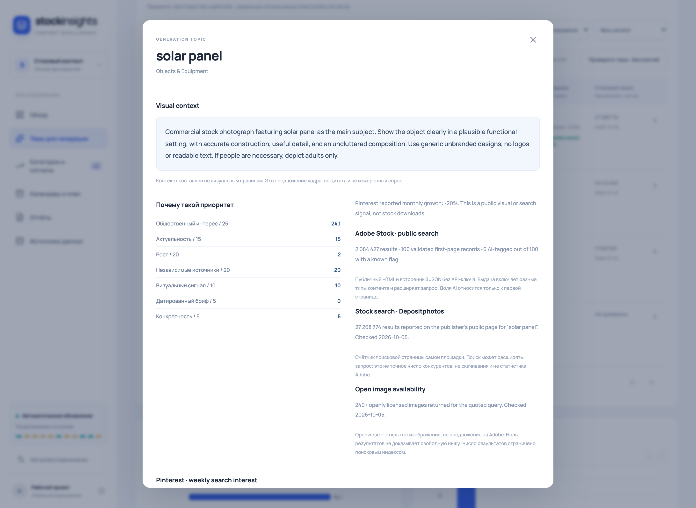
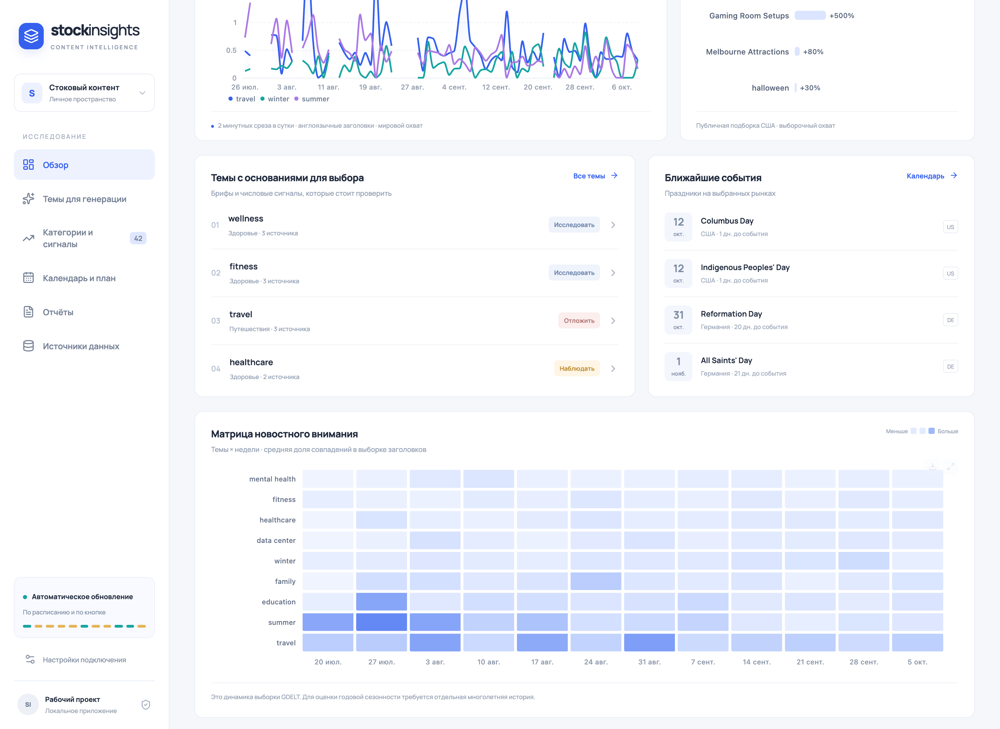
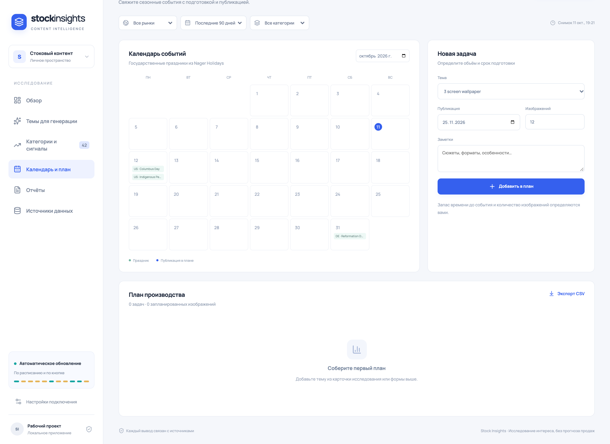

STOCK INSIGHTS / ИССЛЕДОВАНИЕ ТЕМ ДЛЯ СТОКОВ
Поиск перспективных тем для стоковых изображений
Работающее приложение · Проверено на реальных данных

01 / ЗАДАЧА
Определить, какие изображения стоит создавать для фотостоков
Для успешной продажи изображений на фотостоках важно не только качество генерации, но и правильный выбор тем. Необходимо понимать, какие сюжеты набирают популярность, что привлекает внимание аудитории сейчас и какие направления могут стать актуальными в ближайшем будущем.
Ручное исследование поисковых трендов, стоковых площадок, новостей и сезонных событий требует значительного времени.
Задача — автоматизировать сбор и анализ данных из разных источников, чтобы находить перспективные темы и превращать результаты исследования в конкретные задания для генерации изображений.
02 / РЕШЕНИЕ
Что делает приложение
Почему тема попала в подборку
Каждая рекомендация подкрепляется доступными данными: актуальными упоминаниями, динамикой интереса и подтверждениями из нескольких источников. В карточке темы можно изучить составляющие рейтинга, графики и исходные материалы.
Рейтинг отражает приоритетность темы для дальнейшей работы, а не гарантирует продажи. Публичный интерес и количество изображений на стоках рассматриваются как ориентиры, а не как прямые показатели покупательского спроса.


03 / ИНЖЕНЕРИЯ
Ключевые решения при разработке
04 / РЕЗУЛЬТАТ
От анализа данных к готовым идеям для генерации
Разработано приложение, которое превращает разрозненные данные из открытых источников в структурированную подборку перспективных тем для стоковых изображений.
Для каждой темы доступны рейтинг, обоснование выбора и готовый визуальный контекст. Можно отслеживать тенденции, учитывать предстоящие события и планировать создание контента заранее.
Экспорт в CSV позволяет передавать выбранные темы в генератор без ручной подготовки заданий. Само приложение отвечает за исследование и подбор тем; генерация изображений и оценка фактических продаж выполняются отдельно.

Проверка работоспособности
Приложение проверено на реальных данных. Проведены 33 автоматических теста, охватывающих обработку источников, расчёты, рейтинг, экспорт и обработку ошибок.
Дополнительно вручную проверены основные функции, пользовательские сценарии и отображение на мобильных устройствах. Совместимость CSV проверена с загрузчиком All_Stock с запуском генерации изображений.
На странице представлены реальные экраны работающего приложения.
05 / ТЕХНОЛОГИИ